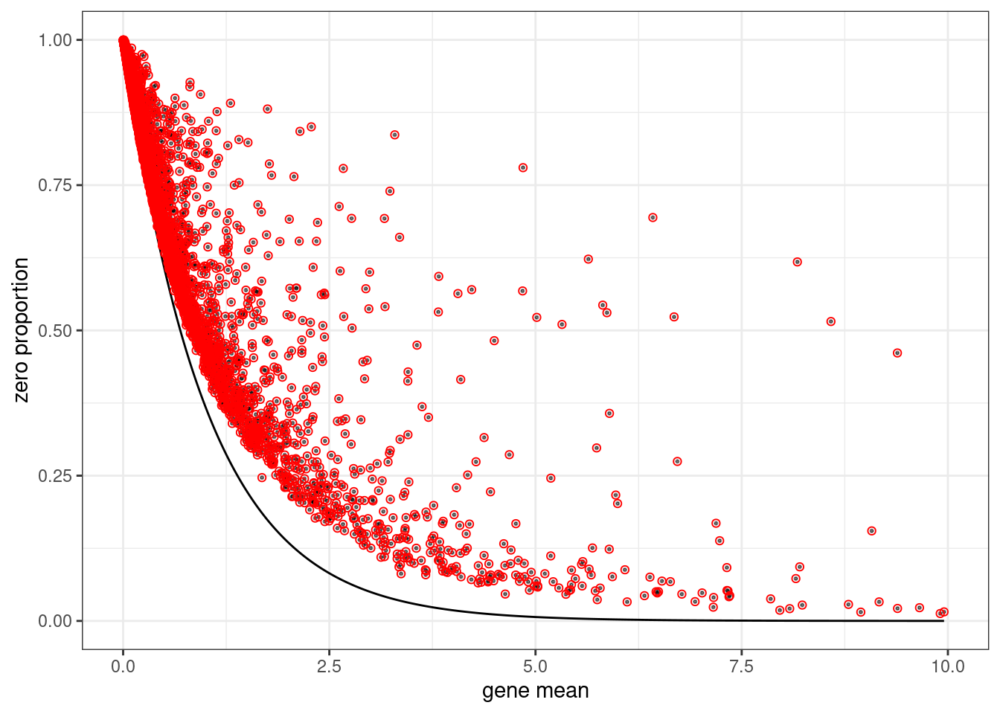
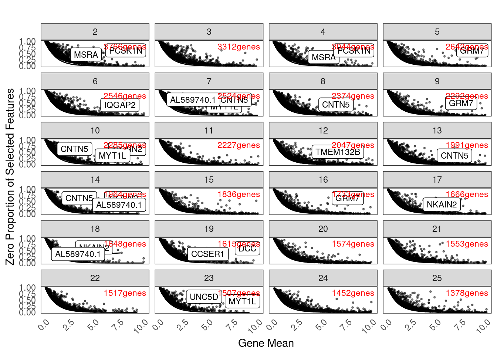
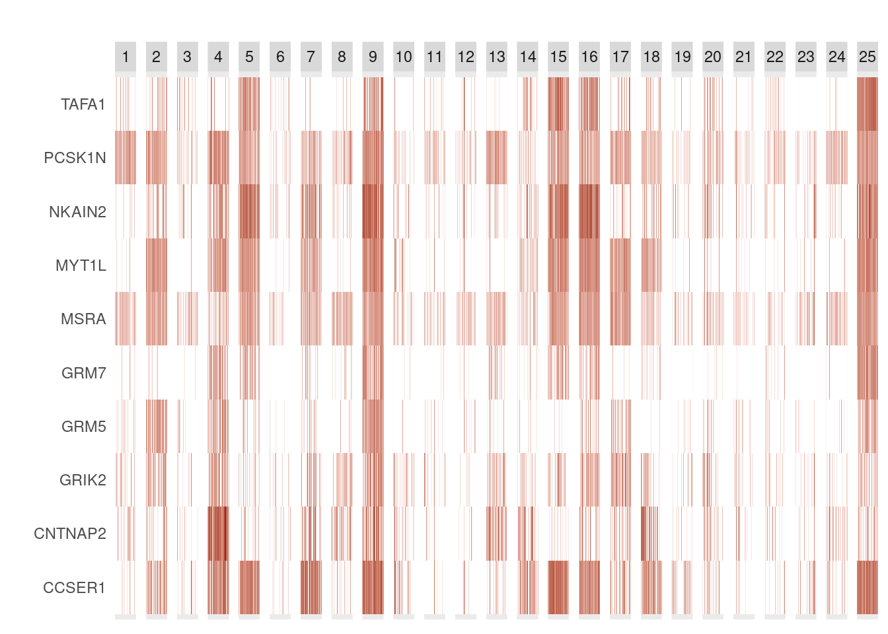

Last updated: 2022-02-08
Checks: 7 0
Knit directory: Organoid_Stress_Pilot/
This reproducible R Markdown analysis was created with workflowr (version 1.6.2). The Checks tab describes the reproducibility checks that were applied when the results were created. The Past versions tab lists the development history.
Great! Since the R Markdown file has been committed to the Git repository, you know the exact version of the code that produced these results.
Great job! The global environment was empty. Objects defined in the global environment can affect the analysis in your R Markdown file in unknown ways. For reproduciblity it’s best to always run the code in an empty environment.
The command set.seed(20210705) was run prior to running the code in the R Markdown file. Setting a seed ensures that any results that rely on randomness, e.g. subsampling or permutations, are reproducible.
Great job! Recording the operating system, R version, and package versions is critical for reproducibility.
Nice! There were no cached chunks for this analysis, so you can be confident that you successfully produced the results during this run.
Great job! Using relative paths to the files within your workflowr project makes it easier to run your code on other machines.
Great! You are using Git for version control. Tracking code development and connecting the code version to the results is critical for reproducibility.
The results in this page were generated with repository version 33d0b07. See the Past versions tab to see a history of the changes made to the R Markdown and HTML files.
Note that you need to be careful to ensure that all relevant files for the analysis have been committed to Git prior to generating the results (you can use wflow_publish or wflow_git_commit). workflowr only checks the R Markdown file, but you know if there are other scripts or data files that it depends on. Below is the status of the Git repository when the results were generated:
Ignored files:
Ignored: .DS_Store
Ignored: .Rhistory
Ignored: data/.DS_Store
Ignored: output/.DS_Store
Ignored: output/4vs_avg-expression.png
Ignored: output/4vs_logfc.png
Ignored: output/4vs_pvals.png
Ignored: output/de_clusters_interaction.Rmd
Ignored: output/de_clusters_interaction2.Rmd
Ignored: output/fitmm0.neuron.RDS
Ignored: output/fitmm1.neuron.RDS
Ignored: output/fitmm2.neuron.RDS
Ignored: output/fitmm3.neuron.RDS
Ignored: output/fitmm4.neuron.RDS
Ignored: output/fitmm5.neuron.RDS
Ignored: output/fitmm6.neuron.RDS
Ignored: output/fitmm7.neuron.RDS
Ignored: output/fitmm8.neuron.RDS
Ignored: output/fitmmall.neuron.RDS
Ignored: output/genes_MT.png
Ignored: output/genes_cells.png
Ignored: output/genes_umi-cluster.png
Ignored: output/genes_umi.png
Ignored: output/interaction_varpart.csv
Ignored: output/merged_full_dataset.RDS
Ignored: output/neuron0_oxidation_table.csv
Ignored: output/neuron1_oxidation_table.csv
Ignored: output/neuron2_oxidation_table.csv
Ignored: output/neuron3_oxidation_table.csv
Ignored: output/neuron4_oxidation_table.csv
Ignored: output/neuron5_oxidation_table.csv
Ignored: output/neuron6_oxidation_table.csv
Ignored: output/neuron7_oxidation_table.csv
Ignored: output/neuron8_oxidation_table.csv
Ignored: output/neuronall_oxidation_table.csv
Ignored: output/organoid.combined.full.sct.neuron.RDS
Ignored: output/organoid.combined.sct.neuron.markers.RDS
Ignored: output/organoid.combined.sct.neuron.unstim.markers.RDS
Ignored: output/organoid.combined.sct03.RDS
Ignored: output/organoid.combined.sct05.RDS
Ignored: output/organoid.combined.sct1.RDS
Ignored: output/organoid_combined_sct_neuron_resolution_0.02.png
Ignored: output/organoid_combined_sct_neuron_resolution_0.05.png
Ignored: output/organoid_combined_sct_neuron_resolution_0.1.png
Ignored: output/organoid_combined_sct_neuron_resolution_0.3.png
Ignored: output/organoid_combined_sct_neuron_resolution_0.5.png
Ignored: output/resolution_test.csv
Ignored: output/resolution_test_pff.csv
Ignored: output/sce_hippo_test.RDS
Untracked files:
Untracked: analysis/cell_cycle_full.Rmd
Untracked: analysis/topics.Rmd
Untracked: data/Snakefile_cellranger
Untracked: data/all.vcf.bed
Untracked: data/australia.rds
Untracked: data/cellranger.38.dict
Untracked: data/cluster.json
Untracked: data/config.yaml
Untracked: data/environment.yaml
Untracked: data/exclude_fulldata.rds
Untracked: data/human.unsorted.vcf
Untracked: data/human.vcf
Untracked: data/human.vcf.bed
Untracked: data/library9.rds
Untracked: data/log/
Untracked: data/mysterycell.rds
Untracked: data/neuron.control.sce.RDS
Untracked: data/organoid.combined.sct03.neuron.RDS
Untracked: data/organoid_combined_sct03.RDS
Untracked: data/reheaded.vcf
Untracked: data/snakelog.out
Untracked: data/snakemake_cellranger.batch
Untracked: data/sorted.vcf
Untracked: data/submit.sh
Untracked: data/unsorted.vcf
Untracked: data/unsorted_header
Untracked: data_S2/
Note that any generated files, e.g. HTML, png, CSS, etc., are not included in this status report because it is ok for generated content to have uncommitted changes.
These are the previous versions of the repository in which changes were made to the R Markdown (analysis/hippo.Rmd) and HTML (docs/hippo.html) files. If you’ve configured a remote Git repository (see ?wflow_git_remote), click on the hyperlinks in the table below to view the files as they were in that past version.
| File | Version | Author | Date | Message |
|---|---|---|---|---|
| Rmd | 33d0b07 | Ben Umans | 2022-02-08 | wflow_publish(files = c(“analysis/hippo.Rmd”, “analysis/index.Rmd”)) |
Mengjie Chen gave a really interesting talk this week about her scRNAseq pre-processing pipeline, HIPPO. The routine is very different from the Seurat approach, iteratively splitting clusters in a hierarchical manner, rather than identifying highly variable genes across the whole map. One can imagine helpful aspects of this–particularly for a developmental tree, where you want to be able to compare at similar levels of resolution (ie, not comparing retinal pigmented epithelium to mesoderm). I’d like to try it out with my organoid data just to see what would happen.
Sys.setenv(TZ='America/Chicago')
library(HIPPO)
library(Seurat)Attaching SeuratObjectlibrary(tidyverse)Registered S3 method overwritten by 'cli':
method from
print.boxx spatstat.geom── Attaching packages ─────────────────────────────────────── tidyverse 1.3.1 ──✓ ggplot2 3.3.5 ✓ purrr 0.3.4
✓ tibble 3.1.2 ✓ dplyr 1.0.7
✓ tidyr 1.1.3 ✓ stringr 1.4.0
✓ readr 1.4.0 ✓ forcats 0.5.1── Conflicts ────────────────────────────────────────── tidyverse_conflicts() ──
x dplyr::filter() masks stats::filter()
x dplyr::lag() masks stats::lag()library(ggplot2)
library(RColorBrewer)
library(knitr)
library(viridis)Loading required package: viridisLitelibrary(SingleCellExperiment)Loading required package: SummarizedExperimentLoading required package: MatrixGenericsLoading required package: matrixStats
Attaching package: 'matrixStats'The following object is masked from 'package:dplyr':
count
Attaching package: 'MatrixGenerics'The following objects are masked from 'package:matrixStats':
colAlls, colAnyNAs, colAnys, colAvgsPerRowSet, colCollapse,
colCounts, colCummaxs, colCummins, colCumprods, colCumsums,
colDiffs, colIQRDiffs, colIQRs, colLogSumExps, colMadDiffs,
colMads, colMaxs, colMeans2, colMedians, colMins, colOrderStats,
colProds, colQuantiles, colRanges, colRanks, colSdDiffs, colSds,
colSums2, colTabulates, colVarDiffs, colVars, colWeightedMads,
colWeightedMeans, colWeightedMedians, colWeightedSds,
colWeightedVars, rowAlls, rowAnyNAs, rowAnys, rowAvgsPerColSet,
rowCollapse, rowCounts, rowCummaxs, rowCummins, rowCumprods,
rowCumsums, rowDiffs, rowIQRDiffs, rowIQRs, rowLogSumExps,
rowMadDiffs, rowMads, rowMaxs, rowMeans2, rowMedians, rowMins,
rowOrderStats, rowProds, rowQuantiles, rowRanges, rowRanks,
rowSdDiffs, rowSds, rowSums2, rowTabulates, rowVarDiffs, rowVars,
rowWeightedMads, rowWeightedMeans, rowWeightedMedians,
rowWeightedSds, rowWeightedVarsLoading required package: GenomicRangesLoading required package: stats4Loading required package: BiocGenerics
Attaching package: 'BiocGenerics'The following objects are masked from 'package:dplyr':
combine, intersect, setdiff, unionThe following objects are masked from 'package:stats':
IQR, mad, sd, var, xtabsThe following objects are masked from 'package:base':
anyDuplicated, append, as.data.frame, basename, cbind, colnames,
dirname, do.call, duplicated, eval, evalq, Filter, Find, get, grep,
grepl, intersect, is.unsorted, lapply, Map, mapply, match, mget,
order, paste, pmax, pmax.int, pmin, pmin.int, Position, rank,
rbind, Reduce, rownames, sapply, setdiff, sort, table, tapply,
union, unique, unsplit, which.max, which.minLoading required package: S4Vectors
Attaching package: 'S4Vectors'The following objects are masked from 'package:dplyr':
first, renameThe following object is masked from 'package:tidyr':
expandThe following objects are masked from 'package:base':
expand.grid, I, unnameLoading required package: IRanges
Attaching package: 'IRanges'The following objects are masked from 'package:dplyr':
collapse, desc, sliceThe following object is masked from 'package:purrr':
reduceLoading required package: GenomeInfoDbLoading required package: BiobaseWelcome to Bioconductor
Vignettes contain introductory material; view with
'browseVignettes()'. To cite Bioconductor, see
'citation("Biobase")', and for packages 'citation("pkgname")'.
Attaching package: 'Biobase'The following object is masked from 'package:MatrixGenerics':
rowMediansThe following objects are masked from 'package:matrixStats':
anyMissing, rowMedians
Attaching package: 'SummarizedExperiment'The following object is masked from 'package:SeuratObject':
AssaysThe following object is masked from 'package:Seurat':
Assaysorganoid.combined.sct.neuron <- readRDS(file="output/organoid.combined.full.sct.neuron.RDS")
organoid.combined.control <- subset(organoid.combined.sct.neuron, subset = stim=="control")
sce <- SingleCellExperiment(assays=list(counts=organoid.combined.control@assays$RNA@counts))
rm(organoid.combined.sct.neuron)
rm(organoid.combined.control)
#to use only genes that are expressed above a certain count value
# keep_feature <- rowSums(counts(sce)>10) >0
# sum(keep_feature)
# sce <- sce[keep_feature,]
#to randomly subsample genes
keep_feature <- sample(rownames(sce), size=8000)
sce <- sce[keep_feature,]##Initial diagnostics I’mm using a random subset of 8000 genes to speed computation. Let’s see what zero-inflation looks like here in the whole dataset.
hippo_diagnostic_plot(sce,
show_outliers = TRUE,
zvalue_thresh = 2)
##HIPPO clustering
set.seed(20200321)
sce = hippo(sce, K = 25, z_threshold = 2, outlier_proportion = 0.01, verbose=TRUE)K = 2..K = 3..Warning: Quick-TRANSfer stage steps exceeded maximum (= 523600)K = 4..K = 5..K = 6..K = 7..K = 8..K = 9..K = 10..K = 11..K = 12..K = 13..K = 14..K = 15..K = 16..K = 17..K = 18..K = 19..K = 20..K = 21..K = 22..K = 23..K = 24..K = 25..saveRDS(sce, "output/sce_hippo_test.RDS")HIPPO lets us visualize dimensionality reduction for each iteration:
# sce = hippo_dimension_reduction(sce, method="umap")
# hippo_umap_plot(sce)
zero_proportion_plot(sce)Warning: Removed 833 rows containing missing values (geom_point).Warning: Removed 43 row(s) containing missing values (geom_path).Warning: Removed 93 rows containing missing values (geom_label_repel).
NB: at the moment the function to look at iterative splitting does not work. Will be working on this with Karl.
And the resulting heatmap of clustering genes:
hippo_feature_heatmap(sce, kk = 25,
top.n = 10)
We can finally test for DE between clusters:
sce = hippo_diffexp(sce,
top.n = 5)
sessionInfo()R version 4.1.0 (2021-05-18)
Platform: x86_64-pc-linux-gnu (64-bit)
Running under: Scientific Linux 7.4 (Nitrogen)
Matrix products: default
BLAS/LAPACK: /software/openblas-0.3.13-el7-x86_64/lib/libopenblas_haswellp-r0.3.13.so
locale:
[1] LC_CTYPE=en_US.UTF-8 LC_NUMERIC=C
[3] LC_TIME=en_US.UTF-8 LC_COLLATE=en_US.UTF-8
[5] LC_MONETARY=en_US.UTF-8 LC_MESSAGES=en_US.UTF-8
[7] LC_PAPER=en_US.UTF-8 LC_NAME=C
[9] LC_ADDRESS=C LC_TELEPHONE=C
[11] LC_MEASUREMENT=en_US.UTF-8 LC_IDENTIFICATION=C
attached base packages:
[1] stats4 stats graphics grDevices utils datasets methods
[8] base
other attached packages:
[1] SingleCellExperiment_1.16.0 SummarizedExperiment_1.24.0
[3] Biobase_2.54.0 GenomicRanges_1.46.0
[5] GenomeInfoDb_1.30.0 IRanges_2.28.0
[7] S4Vectors_0.32.0 BiocGenerics_0.40.0
[9] MatrixGenerics_1.6.0 matrixStats_0.60.1
[11] viridis_0.6.1 viridisLite_0.4.0
[13] knitr_1.33 RColorBrewer_1.1-2
[15] forcats_0.5.1 stringr_1.4.0
[17] dplyr_1.0.7 purrr_0.3.4
[19] readr_1.4.0 tidyr_1.1.3
[21] tibble_3.1.2 ggplot2_3.3.5
[23] tidyverse_1.3.1 SeuratObject_4.0.2
[25] Seurat_4.0.3 HIPPO_1.6.0
[27] workflowr_1.6.2
loaded via a namespace (and not attached):
[1] readxl_1.3.1 backports_1.2.1 plyr_1.8.6
[4] igraph_1.2.6 lazyeval_0.2.2 splines_4.1.0
[7] listenv_0.8.0 scattermore_0.7 digest_0.6.27
[10] htmltools_0.5.1.1 fansi_0.5.0 magrittr_2.0.1
[13] tensor_1.5 cluster_2.1.2 ROCR_1.0-11
[16] globals_0.14.0 modelr_0.1.8 spatstat.sparse_2.0-0
[19] colorspace_2.0-2 rvest_1.0.0 ggrepel_0.9.1
[22] haven_2.4.1 xfun_0.24 crayon_1.4.1
[25] RCurl_1.98-1.5 jsonlite_1.7.2 spatstat.data_2.1-0
[28] survival_3.2-11 zoo_1.8-9 glue_1.4.2
[31] polyclip_1.10-0 gtable_0.3.0 zlibbioc_1.40.0
[34] XVector_0.34.0 leiden_0.3.8 DelayedArray_0.20.0
[37] future.apply_1.7.0 abind_1.4-5 scales_1.1.1
[40] DBI_1.1.1 miniUI_0.1.1.1 Rcpp_1.0.7
[43] xtable_1.8-4 reticulate_1.20 spatstat.core_2.2-0
[46] htmlwidgets_1.5.3 httr_1.4.2 ellipsis_0.3.2
[49] ica_1.0-2 farver_2.1.0 pkgconfig_2.0.3
[52] sass_0.4.0 uwot_0.1.10 dbplyr_2.1.1
[55] deldir_0.2-10 utf8_1.2.1 labeling_0.4.2
[58] tidyselect_1.1.1 rlang_0.4.11 reshape2_1.4.4
[61] later_1.2.0 cellranger_1.1.0 munsell_0.5.0
[64] tools_4.1.0 cli_3.0.0 generics_0.1.0
[67] broom_0.7.8 ggridges_0.5.3 evaluate_0.14
[70] fastmap_1.1.0 yaml_2.2.1 goftest_1.2-2
[73] fs_1.5.0 fitdistrplus_1.1-5 RANN_2.6.1
[76] pbapply_1.4-3 future_1.21.0 nlme_3.1-152
[79] whisker_0.4 mime_0.11 xml2_1.3.2
[82] rstudioapi_0.13 compiler_4.1.0 plotly_4.9.4.1
[85] png_0.1-7 spatstat.utils_2.2-0 reprex_2.0.0
[88] bslib_0.2.5.1 stringi_1.6.2 highr_0.9
[91] lattice_0.20-44 Matrix_1.3-3 vctrs_0.3.8
[94] pillar_1.6.1 lifecycle_1.0.0 spatstat.geom_2.2-0
[97] lmtest_0.9-38 jquerylib_0.1.4 RcppAnnoy_0.0.18
[100] data.table_1.14.0 cowplot_1.1.1 bitops_1.0-7
[103] irlba_2.3.3 httpuv_1.6.1 patchwork_1.1.1
[106] R6_2.5.0 promises_1.2.0.1 KernSmooth_2.23-20
[109] gridExtra_2.3 parallelly_1.26.1 codetools_0.2-18
[112] MASS_7.3-54 assertthat_0.2.1 rprojroot_2.0.2
[115] withr_2.4.2 sctransform_0.3.2 GenomeInfoDbData_1.2.7
[118] mgcv_1.8-35 parallel_4.1.0 hms_1.1.0
[121] grid_4.1.0 rpart_4.1-15 rmarkdown_2.9
[124] Rtsne_0.15 git2r_0.28.0 shiny_1.6.0
[127] lubridate_1.7.10